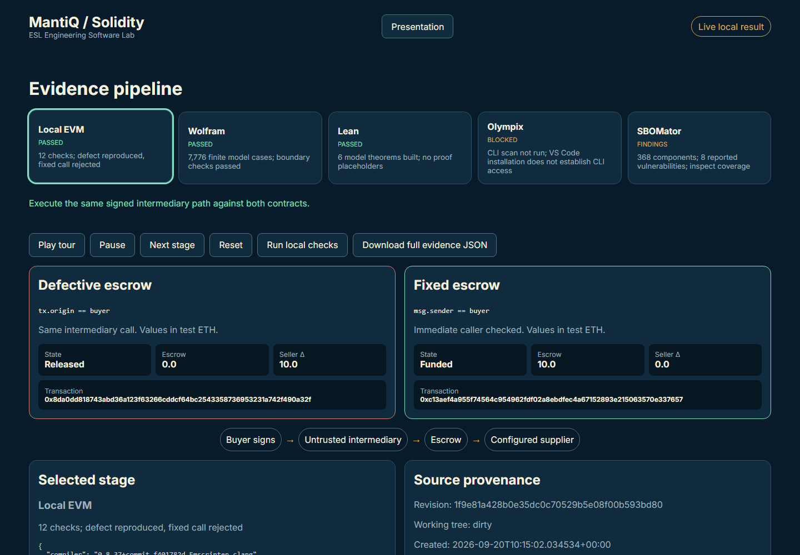
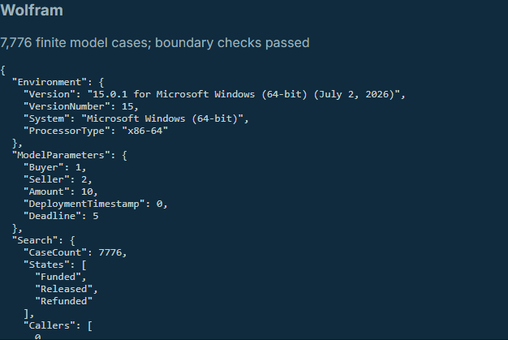
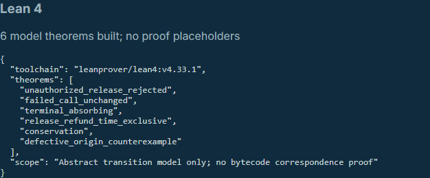
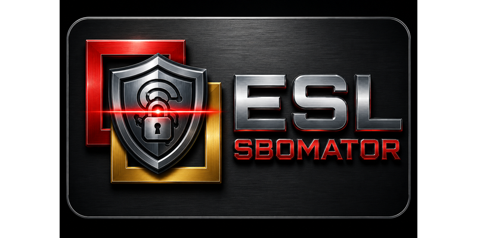
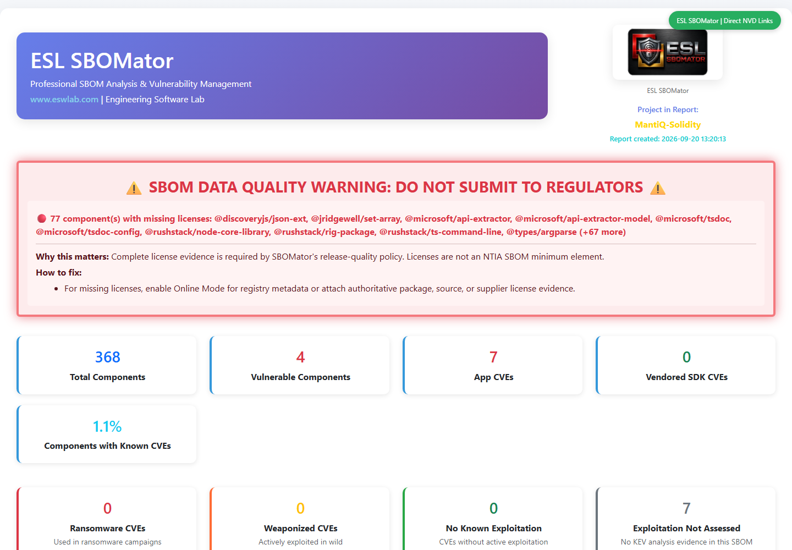
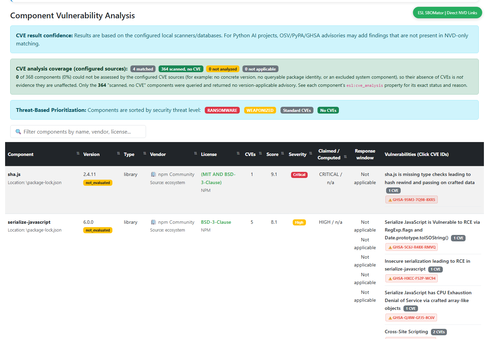
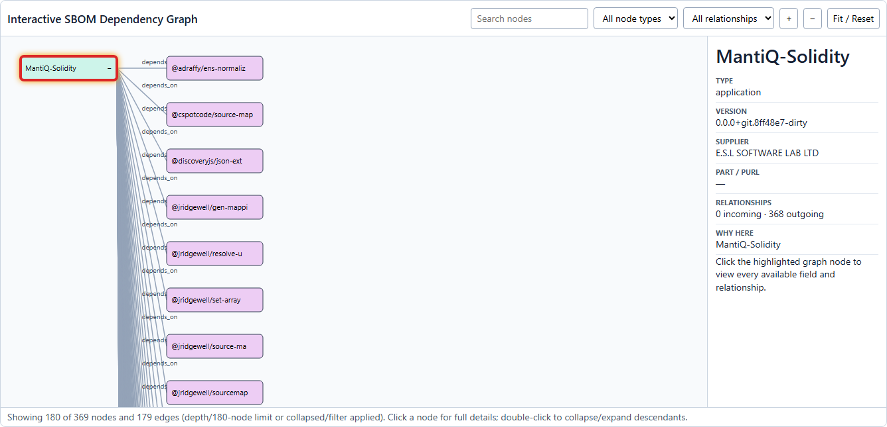

One escrow.
Two outcomes.
Show the evidence.
Amp-assisted Solidity development, Wolfram checks, Lean 4 model proofs, and ESL SBOMator supply-chain evidence.

Prepared teaching fixture, not a production escrow or a security guarantee.
ESL connects the tools to the engineering question.
This demo combines executable behavior, independent models, and dependency evidence in one reproducible workflow.
Build & exercise
Amp prepares the defective and corrected fixtures. Local EVM tests show exactly how they behave.
Challenge assumptions
Wolfram explores the model; Lean checks six model theorems. The implementation-to-model gap stays explicit.
Expose the toolchain
ESL SBOMator identifies packages, advisories, and missing license evidence behind the build and tests.
Your contact: Daniel Liezrowice. Bring a repository, intended behavior, and existing test evidence to scope a repeatable demonstration.
ESL service context: software verification and evidence preparation. Brochure: ESL FDA Software Evidence Services, p. 9. This Solidity demo makes no medical-device or regulatory approval claim.
The buyer controls settlement, not the intermediary.
Before deadline
Buyer may release to the configured supplier.
At / after deadline
Buyer may refund. Terminal states cannot settle again.
Failed calls leave state and ledger unchanged. Recipient transfer failure must revert settlement.
The authentication defect
Defective
tx.origin == buyer
An intermediary call still carries the buyer as transaction origin.
Corrected
msg.sender == buyer
The immediate caller must be the buyer.
Precondition: the buyer signs the intermediary transaction. This is not a remote unauthenticated drain, and funds do not go to an arbitrary thief.
Same signed interaction. Ten test ETH stay or leave.
Defective: releases 10 test ETH to the configured supplier.
Corrected: rejects the intermediary; all 10 test ETH remain in escrow.
solc 0.8.37 · optimized Shanghai bytecode · Ganache in-process EVM. Deadline boundaries, exact balances, repeated settlement, and failed-transfer rollback are checked.
7,776 model cases. Test the exact deadline.
| Buyer call at | Release | Refund |
|---|---|---|
| deadline − 1 | Released | Funded |
| deadline | Funded | Refunded |
| deadline + 1 | Funded | Refunded |
Independent enumeration checks guard behavior, terminal states, and abstract conservation. Counterexample search finds the caller/origin mismatch.
Finite model exploration is not exhaustive EVM verification.

Six kernel-checked theorems. A clearly bounded claim.
Unauthorized release rejection, unchanged rejected calls, terminal
absorption, exclusive time windows, abstract conservation, and a
concrete tx.origin counterexample.
Not proved: correspondence between the model and Solidity source or bytecode. Gas, external calls, reentrancy, and transaction ordering remain outside this model.
Lean 4.33.1 · no proof placeholders · model and assumptions included in the MIT repository.

Installed, but not yet authenticated.
Installed
VS Code extension 2.0.2 and Windows CLI 0.11.119. The CLI download checksum was verified.
BLOCKED
Account access was rejected. Daniel contacted Olympix support; no authenticated scan has completed.
Next measurement
Run the real scan, capture JSON, and check whether it identifies the seeded authorization defect.
No finding screenshot is shown because there is no completed Olympix scan. Blocked never means passed.
Official CLI documentation: https://olympix.github.io/cli/. Static analysis is documented as free; premium test generation is outside v1.
What is ESL SBOMator?

A software bill of materials answers what is inside the software. SBOMator connects that inventory to known vulnerabilities, license evidence, and engineering review.
Open this demo's actual report ↗Inventory
Generate CycloneDX component and dependency evidence, including versions, suppliers, and licenses.
Assess & explain
Correlate advisory sources; inspect dependency graphs; document vulnerability status and justifications with VEX.
Retain & monitor
Produce SBOMs, reports, and review records. Broader product workflows support rescanning, change tracking, and lifecycle evidence.
Based on ESL brochures: SBOMator CRA Compliance, Part 1, pp. 2–5; Technical Differentiators, Part 2, pp. 10–14. Product capabilities are not a claim that every feature ran in this demo. SBOMator supports evidence preparation, not certification.
Show the report, including its warnings.
All four direct dependencies found: solc, ethers, Ganache, and fast-check. Transitive development packages are included.
Quality gate: BLOCKED. Missing license evidence is not a license violation finding. It is missing evidence requiring review.
Explore the full HTML report ↗Original report, unchanged. Local OSV snapshot; Grype disabled. No fresh online advisory or Solidity-semantic coverage is claimed.

Seven advisories, eight component-level records.
| Package | Version | Records |
|---|---|---|
| sha.js | 2.4.11 | 1 |
| serialize-javascript | 6.0.0 | 5 |
| bn.js | 4.12.0 | 1 |
| bn.js | 5.2.1 | 1 |
The same advisory appears on two bn.js versions. That
explains 8 records in the dashboard versus
7 unique IDs in the report.
Package matches are not proof of exploitability in this demo. Triage reachability and update options; do not suppress a finding to make the screen green.

Explore the actual software dependency graph.
Tab to a visible package node and press Enter to inspect its evidence and relationships. Use the component-table filter for exact package lookups.
The graph makes the build and test toolchain visible alongside the escrow code.
Open the interactive graph ↗Dependency relationships do not establish function-level reachability or on-chain exploitability. This recorded graph limits its default view to 180 nodes; its search can select the project root. Use keyboard selection if clicking does not update the details panel.

Open artifacts, bounded claims, reproducible checks.
Provenance
Revision, dirty state, creation time, and genuine SHA-256 hashes for source files.
Honest states
Pending, running, passed, failed, blocked, and findings remain distinct.
Recorded replay is labelled as recorded. Local execution is labelled live. Missing evidence stays missing.
MIT source repository ↗ Download evidence JSONThe SBOMator report is preserved byte-for-byte from the recorded run. Third-party products and brand marks retain their own rights; inclusion does not imply endorsement.
Let the audience inspect the evidence.
Play the five-stage evidence tour, pause on a finding, and open the full SBOMator report.
Launch automated demo →Open SBOMator report ↗For live local execution:
python demo.py serve
Public GitHub Pages hosts recorded replay only. The loopback Python server enables real local checks.
Bring the engineering question.
Build the evidence with us.
Discuss a scoped pilot around your software, dependencies, test suite, and verification goals.
daniel.l@eswlab.com
+972 9 8855803
Ha-Nagar
24 A, Hod Hasharon, Israel
A practical first conversation
What must the software do? What evidence already exists? Which unknowns matter most?
Educational demonstration, not an audit, certification, or production-readiness verdict.
Sales: sales@eswlab.com · eswlab.com